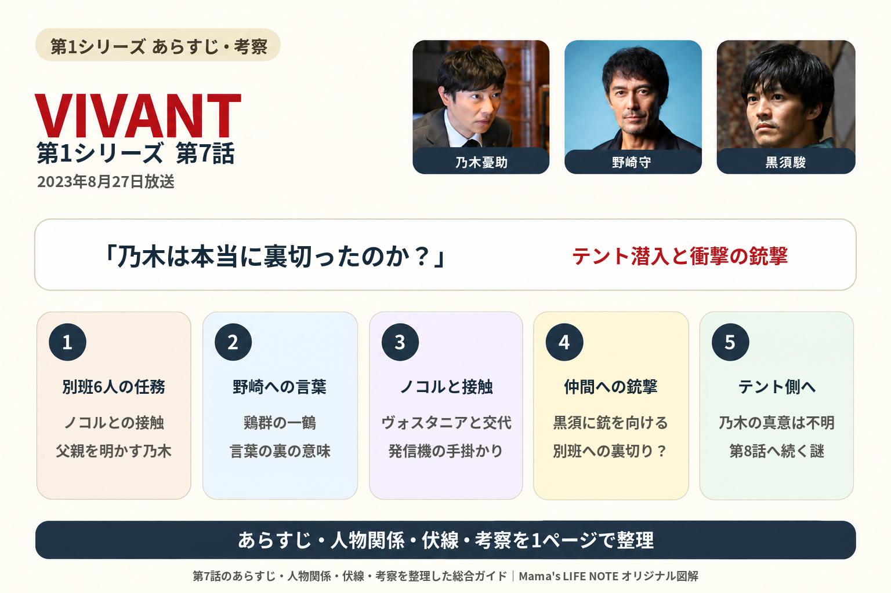
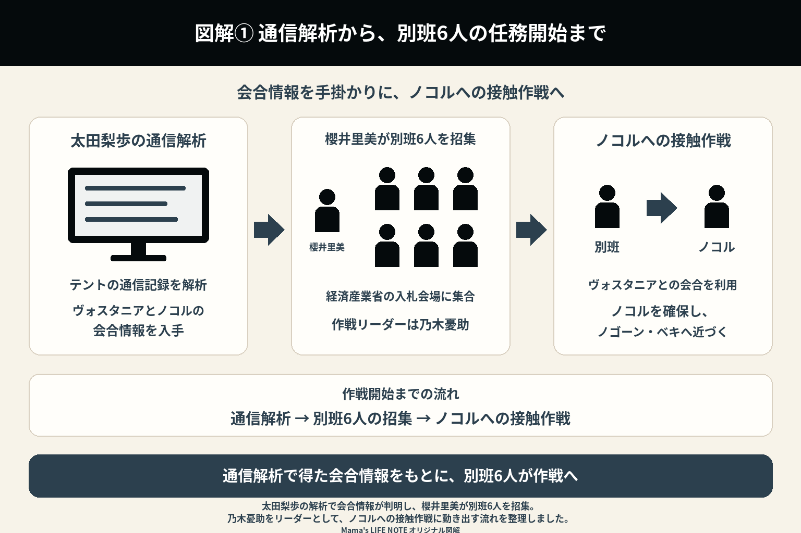
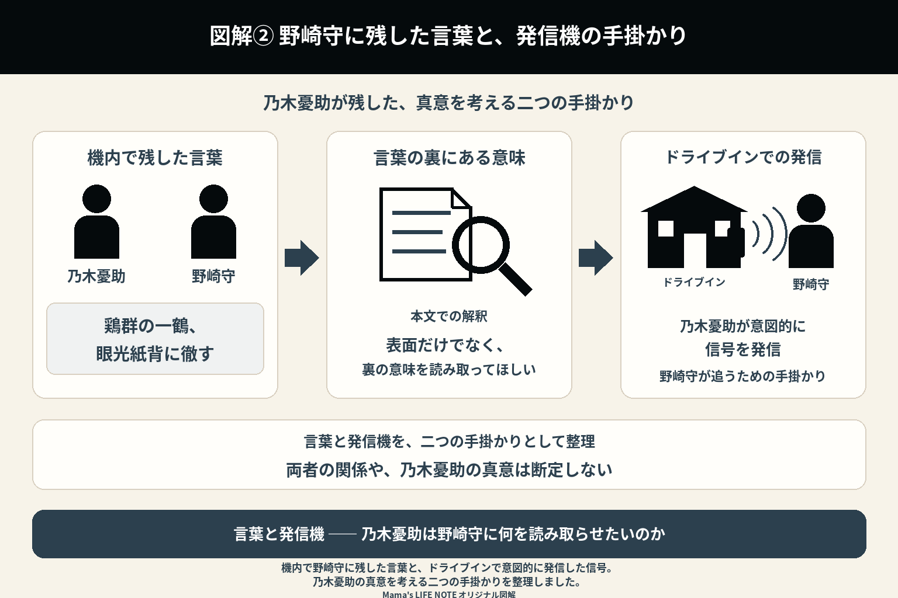
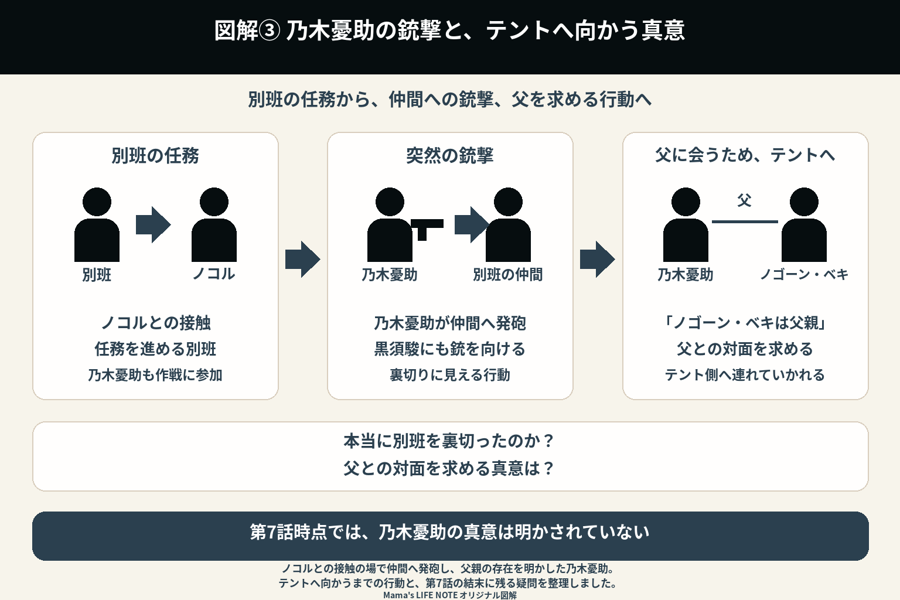

『VIVANT』第7話（2023年8月27日放送）
第7話は、別班がテントへの潜入作戦を開始する回。そしてラストでは、『VIVANT』屈指の衝撃シーンが待っている。初めて見たとき、多くの視聴者が「乃木憂助は本当に裏切ったのか？」と息をのんだ。

1. 別班の新たな任務が始まる
ブルーウォーカー・太田梨歩の解析によって、テントのサーバーから重要な情報が引き出される。
通信記録の解析から、ロシアの反政府組織ヴォスタニアとテント幹部のノコルが、近日中にバルカ共和国のロシア国境付近で会合することが判明した。
その情報をもとに、別班は緊急招集される。
別班の司令・櫻井里美は、経済産業省主催の風力発電事業の入札会場に、乃木憂助や黒須駿ら6人の精鋭隊員を招集する。
テントの最終標的は日本。
乃木憂助、黒須駿をはじめとする6人の精鋭隊員が集まり、テントが計画している次の行動を阻止するため、新たな任務が始まる。
ここで乃木憂助は、自らの口で「テントのリーダー・ベキは、自分の父親です」と隊員たちへ打ち明ける。
突然の告白に、別班のメンバーも驚きを隠せなかった。
今回の作戦のリーダーは乃木憂助。そして、接触するテント幹部がノコルであることも明らかになった。

2. 任務よりも父親を選ぶのか
司令・櫻井里美は、乃木憂助に問い掛ける。
「任務を続けられるのか」
乃木憂助は迷いながらも、「任務は遂行します」と静かに答える。
しかし、その表情には複雑な感情がにじんでいた。
これまで敵として追ってきた人物が、父親かもしれない。
第6話までとは違い、この回では乃木憂助の人間らしい葛藤が、より強く描かれる。
3. 野崎守もバルカ共和国へ向かう
公安の野崎守も、テントの動きを追って再びバルカ共和国へ向かう。
野崎守は、ハリー・ポッターが大好きだと乃木憂助に伝える。
飛行機の中では、乃木憂助と野崎守が隣り合わせになる。
互いに多くを語ることはないが、この場面では以前のような敵対心だけではなく、不思議な信頼感も感じられる。
野崎守は亡くなった後輩・リュウミンシュンの話をし、「お前を見ると、あいつを思い出す」と乃木憂助へ打ち明ける。
この何気ない会話は、後の展開を知ってから見返すと、さらに重みを感じる場面である。
4. テント幹部・ノコルとの接触
別班は、テント幹部・ノコルへ近づく作戦を開始する。
ノコルはノゴーン・ベキの右腕ともいえる存在であり、テント内部でも非常に重要な人物だった。
別班はノコルを確保し、そのままノゴーン・ベキへ近づく計画を立てる。
乃木憂助たちは、ドライブインでヴォスタニアのスワンリーダーら6人と入れ替わる。
このドライブインでは、野崎守に気付かせるため、わざと発信機の信号を出す。
そして、ノコルに接触する。
ここからは、銃撃戦よりも緊張感あふれる潜入作戦が中心となる。
わずかな判断ミスが命取りになる場面の連続だった。
5. 乃木憂助の異変
ここで、日本を出発する前の乃木憂助の様子を振り返る。
乃木憂助は柚木薫と親密になり、自宅で一緒に赤飯を食べ、キスを交わす。
朝食も一緒に食べる仲となった。
その後、乃木憂助はバルカ共和国へ向かう飛行機の中で、野崎守と一緒になる。
第7話では、乃木憂助たち別班がテントへの接近を進める一方で、野崎守たち公安も乃木憂助を追っている。同じ飛行機に乗った乃木憂助は、野崎守に次の言葉を残す。
「鶏群の一鶴、眼光紙背に徹す」
この言葉が、乃木憂助から野崎守への重要な伏線となる。
「あなたは優秀な人間だ。だから、この言葉の表面だけではなく、その裏にある意味を読み取ってほしい」という意図が込められていると受け取れる。
首都クーダンに到着した乃木憂助は、巧みに野崎守の監視をかわす。
そして、別班の6人が集合する。
別班隊員としての使命と、一人の息子としての気持ち。
二つの感情が激しくぶつかり合う。

6. 作戦は思わぬ方向へ
ノコルの身柄を押さえた別班だったが、状況は急変する。
乃木憂助は突然、黒須駿へ銃を向ける。
隊員たちは、何が起きたのか理解できない。
次の瞬間、乃木憂助は黒須駿を撃ち、さらに別班の仲間へも銃を向ける。
ここまで共に戦ってきた仲間を、乃木憂助自身が裏切ったように見えた。
視聴者も、
「本当に裏切ったのか？」
「何か理由があるのか？」
と、大きな衝撃を受ける場面だった。
7. ベキの前へ
乃木憂助は、ノコルとともにテント側へ向かう。
その行動は、どう見ても別班を裏切ったようにしか見えない。
しかし、乃木憂助の表情は冷静で、何か別の目的があるようにも見える。
視聴者には真意が明かされないまま物語は進み、
「敵か、味方か」
という作品のテーマが、最も色濃く表れた場面となった。
8. 衝撃のラスト
ラストでは、乃木憂助がテント側へ身を置く形となり、黒須駿たちは倒れたままとなる。
別班は壊滅したようにも見え、公安も状況を把握できない。
第7話は、ここで終わる。
乃木憂助は、本当に日本を裏切ったのか。
それとも、すべて計算された潜入任務なのか。
答えは示されず、第8話へ持ち越される。
この終わり方は、シリーズ全体でも屈指の衝撃だった。

第7話で新たに分かったこと
| 項目 | 第7話終了時点 |
|---|---|
| 別班 | テントへの潜入作戦を開始する。 |
| 乃木憂助 | ノゴーン・ベキが父親であることを、別班のメンバーへ打ち明ける。 |
| ノコル | ノゴーン・ベキの側近であり、テントの重要幹部である。 |
| 野崎守 | 再びバルカ共和国へ向かい、乃木憂助を追い続ける。 |
| F | 任務を優先するよう、乃木憂助へ助言し続ける。 |
| ラスト | 乃木憂助が黒須駿を撃ち、別班を裏切ったように見える。 |
第7話の見どころ
第7話は、「乃木憂助は味方なのか、それとも敵なのか」という『VIVANT』最大のテーマを真正面から描いた回だった。
特にラストで乃木憂助が黒須駿を撃つ場面は、放送当時も大きな話題となり、多くの視聴者が「演技なのか、本当の裏切りなのか」と考察を繰り広げた。
ここで物語は一気に緊迫感を増す。第8話では、いよいよ乃木憂助とノゴーン・ベキ、そしてテントの真実へと近づいていく。
第6話のあらすじ・伏線・考察へ
記事公開後にリンクを接続します